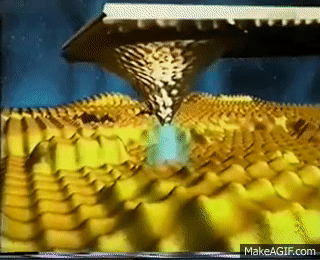

Mi reflexión final
Para concluir el tema es importante recalcar que la nanotecnología es un campo que está en constante evolución que sigue creciendo rápidamente. Su capacidad para manipular la materia a escala nanometrica es increíble ya que ha abierto nuevas posibilidades en campos como lo es la medicina, la energía, la electrónica y los materiales.
También la complejidad de la carrera es impresionante donde tiejne que ver mucho las matemáticas , la química y la física y se juntan para la investigación.
En mi opinión me gusta mucho loa carrera por todo lo que llega a ofrecer y todo lo que puedes llegar a hacer en esta , así como también sus áreas de oportunidad y la complejidad que tiene para diseñar, modifcar e investigar los átomos y moléculas. 